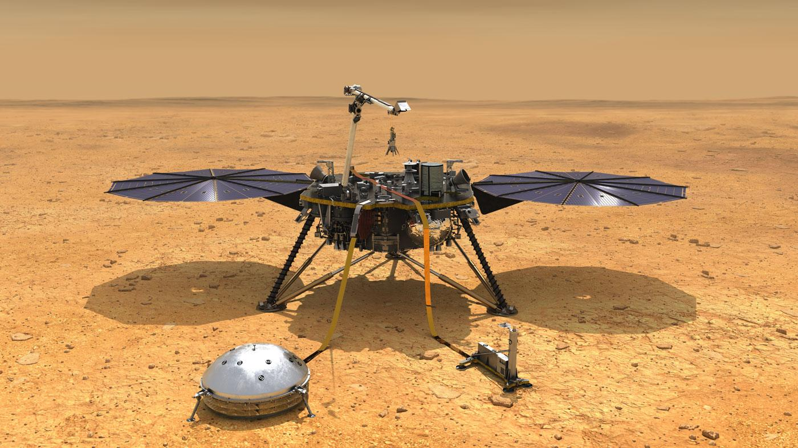

Voyager 2
Launched by NASA on 1977, still active. On 2018, at distance of 1.83x10^10 km from the Sun, left the heliosphere and entered the interstellar medium.

Parker Solar Probe
Is a NASA Space Probe launched in 2018 with the mission of making observations of the outer corona of the Sun. It will approach to within 9.86 solar radii (6.9 million km) from the center of the Sun, and by 2025 will travel, at closest approach, as fast as 690,000 km/h, or 0.064% the speed of light.

InSight
Is a robotic lander designed to study the deep interior of the planet Mars.